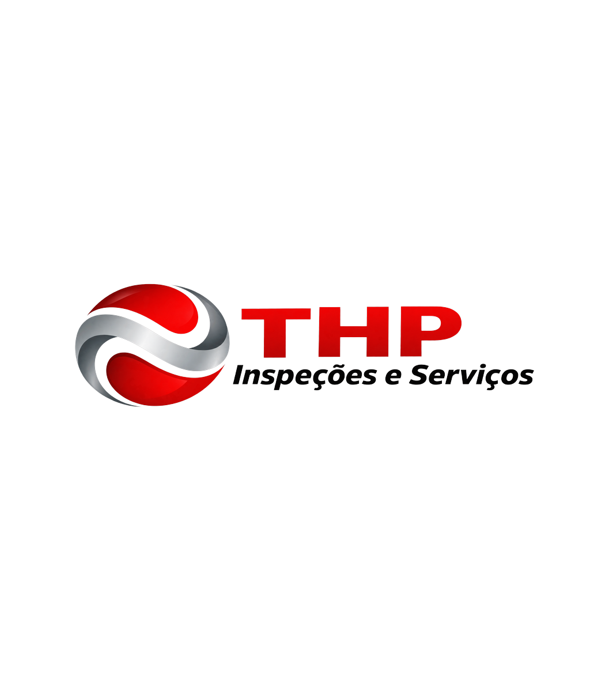

Nossa Missão
Capacitar profissionais e empresas da indústria de óleo e gás por meio de uma plataforma inteligente que integra conhecimento técnico, normas internacionais e Inteligência Artificial para apoiar decisões precisas, seguras e eficientes.

Plataforma de Inteligência Técnica
O THP une as normas API de roscas, tubos e qualidade à Inteligência Artificial para apoiar decisões precisas, seguras e eficientes na indústria de óleo e gás.
A plataforma
Sem manuais empilhados na mesa: você descreve a dúvida e o THP responde com base nas normas aplicáveis.
Qual a diferença entre conexões EUE e NUE?
O que ele faz
Tarefas do dia a dia resolvidas na hora, sem abrir manual.
Polegadas e milímetros, lb/ft e kg/m, psi e MPa, lb-ft e N·m. Com o fator usado à mostra, para você conferir.
Digite 9 5/8" 47# P110 BTC e receba a leitura completa:
diâmetro, peso, grau do aço e conexão — com a norma de cada parte.
Fotografe a marcação do tubo, a plaqueta ou o certificado. Ele transcreve, interpreta e diz o que não dá para afirmar por imagem.
Upset, coupling, make-up, thread compound. Glossário português–inglês com o termo normativo correto.
API 5CT ou 5L? Entenda escopo, aplicação e o critério de decisão entre normas parecidas.
Estrutura de sistema da qualidade, requisitos de documentação e auditoria conforme API Specification Q1.
Nunca inventa número. Valores de tabela dependem de edição, peso e grau — o THP explica o conceito e indica exatamente onde consultar, em vez de arriscar um palpite.
O que é o THP
O THP Inspeções e Serviços é uma plataforma inteligente desenvolvida para transformar conhecimento técnico em soluções práticas para a indústria de óleo e gás.
Criado com base na experiência de profissionais do setor e impulsionado por Inteligência Artificial, o THP integra engenharia, normas técnicas e inovação em um único ambiente, oferecendo suporte confiável para fabricantes, operadores, inspetores, engenheiros, gestores da qualidade, consultores e estudantes.
Mais do que um assistente virtual, o THP foi concebido para proporcionar respostas fundamentadas, informações confiáveis e apoio técnico para aumentar a segurança, a produtividade, a conformidade normativa e a excelência operacional.
Pilares
Interpretação de requisitos e apoio na aplicação correta das normas vigentes.
Cálculos, especificações técnicas, fabricação, inspeção e manutenção.
Procedimentos, auditorias e gestão da qualidade conforme API Specification Q1.
Respostas fundamentadas em segundos, disponíveis a qualquer hora.
Da geometria da rosca ao sistema da qualidade, reunidos em um só lugar.
Normas técnicas
Especialização em roscas, tubos, conexões e sistema da qualidade — auxiliando na interpretação de requisitos, elaboração de procedimentos, especificações técnicas, inspeções, fabricação, manutenção e tomada de decisões.
Para quem é
Propósito
Capacitar profissionais e empresas da indústria de óleo e gás por meio de uma plataforma inteligente que integra conhecimento técnico, normas internacionais e Inteligência Artificial para apoiar decisões precisas, seguras e eficientes.
Ser a principal plataforma de Inteligência Artificial especializada em engenharia, normas técnicas e gestão da qualidade para a indústria de óleo e gás, tornando-se uma referência global em conhecimento técnico aplicado.
Nossos Valores
Acesse agora
Aponte a câmera do celular para o código ou toque no botão para abrir o THP direto no navegador — sem instalar nada.
Abrir o THPAponte a câmera
do celular